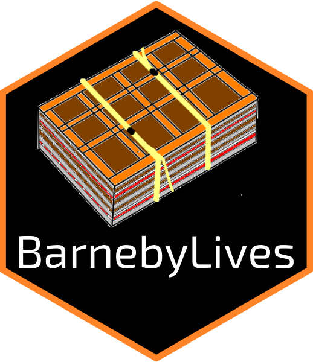

BarnebyLives: Herbarium Data Collection for W North America


BarnebyLives
Tools for collecting digital data on herbarium specimens across Western North America
Overview

BarnebyLives! is an R program which serves to help botanical collectors in Western North America. BarnebyLives! runs multiple types of queries to acquire political and administrative, geographic, and taxonomic data for recently collected herbarium specimens. It also has limited abilities to search for taxonomic synonyms, check spelling of family, genus, and species names, as well as author abbreviations.
BarnebyLives! is designed to cover the entirety of the flora of the western conterminous US, which coincides with the Mississippi River. It also includes the entirety of the state of Illinois, and portions of Indiana. However, the area is bounded on it’s North by Canada and South by Mexico, essentially it covers the western portion of the Conterminous United States (which excludes Alaska). While it covers this range, most variables are focused on supporting botanists working West of the Rocky Mountain Front Range, especially those operating on Bureau of Land Management and Forest Service administered lands.
BarnebyLives! Is meant to supplement, not supplant, collectors field note endeavors. Variables which BarnebyLives! may produce, automatically, for each collection includes:
Political
- State
- County
- Township
- Public Land Survey System (township, range, section)
Geographic - Mountain Range (if relevant)
- Nearest Geographic Names Information System (GNIS) place name, and distance and azimuth from it
Site characteristics
- Elevation (both meters and feet)
- Slope
- Aspect
- Surficial geology
- Geomorphon (major landform elements)
Taxonomic
- Spell check for Family, Genus, and specific epithet - Searches for synonym to species
- Spell checks taxonomic authorities - Spell check for associated species
Directions
- directions to a parking spot can be acquired from Google Maps; however this implies the location can be driven to in the first place.
Other features include
- Date parsing, e.g. convert date into congruent museum formats (month in European style)
- Conversion of Degrees Minutes Seconds (DMS) to Decimal Degrees (DD)
- Exporting collection data as a ‘shapefile’ or KML for use in a GIS or GoogleEarth
Label and shipping manifest generation - Herbarium Labels which autopopulate from the script output - Manifests which autopopulate from the script outputs - Herbarium labels with retro dot municipality maps
Electronic data for mass digital specimen upload - Puts out data in formats congruent with Symbiota, Darwincore, Rocky Moutain Herbarium, and Consortium of Pacific Northwest Herbaria.
Installation
BarnebyLives! Can be installed from github.
devtools::install_github('sagesteppe/BarnebyLives')Linux
The generation of labels will requires that Rmarkdown is succesfully set up to render to PDF via a LaTeX distribution such as pdflatex, lualatex, xelatex.
Labels will further require two programs, pdfjam and pdftk. These can be installed on Debian flavors of Linux as so:
sudo apt-get update
sudo apt-get install pdfjam -y
sudo apt-get install pdftk -yMacOS
MacOS Installation
We recommend using the small package tinytex (pronounced Tiny-Tech) which comes with only a core set of utilities which can be supplemented as required. TinyTex can be installed directly in R using:
install.packages("tinytex')
tinytex::install_tinytex()Now from a command terminal run the following to use TexLives package manager to add a few additional required tools.
tlmgr install eso-pic grfext grffile oberdiek pdfjam pdfjam.universal-darwin pdflscape pdfpages setspace tlgpg tlgpg.universal-darwinTo verify the installs worked check, from the command line.
pdfjam --version
pdflatex --versionWindows
Windows Installation
- install git for windows
See here for details on install.
- to render individual labels
after installing BarnebyLives, tinytex will need to install a minimal tex version. Run the following in R.
install.packages('tinytex')
tinytex::install_tinytex()- to combine the labels for printing.
You will need a few more tools. First you will need choco, which is a package manager for windows (like brew for Mac, or apt or yum for Linux). These details are reproduced from chocolatey.org
from a POWERSHELL run as administrator
Set-ExecutionPolicy Bypass -Scope Process -Force; iex ((New-Object System.Net.WebClient).DownloadString('https://community.chocolatey.org/install.ps1'))If that doesn’t work you will need to swap your permissions (see the linked guide above).
You can verify that choco is installed by running, from the powershell
chocoAnd now use choco to install pdftk. Open a git bash shell as an administrator and
choco install pdftk -y- install pdfjam
Download the most recent release of pdfjam (4.2.zip) from the github repo
using the git bash terminal copy if to a location on PATH
unzip pdfjam-4.2.zip
mv ~/Downloads/pdfjam-4.2 ~/pdfjammake it executable
chmod +x ~/pdfjam/bin/pdfjamadd to your PATH
export PATH="$HOME/pdfjam/bin:$PATH"and verify the installation with
which pdfjamif that works add it your path for good
echo 'export PATH="$HOME/pdfjam/bin:$PATH"' >> ~/.bashrc- install required latex packages to supplement tinytex
You will need the tinytex package manager for this. Check if it is accessible via
which tlmgrif is not found, and you installed via R. try adding it to path as in the below.
note USERNAME is a placeholder.
echo 'export PATH="/c/Users/USERNAME/AppData/Roaming/TinyTeX/bin/windows:$PATH"' >> ~/.bashrcand you are probably going to need to update tlmgr right off the bat.
tlmgr --update selfnow you can install the other required packages
tlmgr.bat install pdfpages eso-pic grfext grffile oberdiek pdflscape pdfpages setspace tlgpgInput Data Column Names
The columns in the top table are required to run the all the functions in BarnebyLives. The columns in the middle table are suggested to increase the quality of the collections. The columns in the lower table are optional, to be blunt, BarnebyLives will generate all of these values. Ficticious examples are provided here, while links to real examples (~100) are contained here and in the vignettes.
| Column name | Description | Example |
|---|---|---|
| Collection_number | The collection number for the primary botanist. This number should unambiguously identify the collection, and be inclusive of all replicates (multiple herbaria sheets). We recommend using a number agnostic of projects and seasons. | 6359 |
| Primary_Collector | The botanist who assumes primary responsibility for collecting, processing, and coordinating the accessioning of the collection with herbaria. | Rupert Barneby |
| Associated_Collectors | Other collectors who were present at the time of collection, and contributed to the process. | Dwight Ripley |
| Full_name | The full scientific name of the taxonomic entity, by neccessity including the Genus and Epithet which form a binomial, and information on infraspecies. | Astragalus tephrodes var. eurylobus |
| Latitude | The decimal degrees (dd) or degrees minutes seconds (dms) perpendicular to the equator which the collection was made at. | 37.6415 |
| Longitude | The decimal degrees (dd) or degrees minutes seconds (dms) along the equator which the collection was made at. | -114.4985 |
| Date_digital | The date which the collection was made in American format, ‘mm.dd.yyyy’ for example, ‘01.02.2023’ is January 2nd. | 06.18.1944 |
| Vegetation | Plant species which are present with high amounts of biomass, or which are postulated to be keystone species etc. | Artemisia nova, Pleuraphis jamesii |
| Associates | Other plant species growing in the area which do not compose the dominant amounts of biomass. | Brickellia longifolia |
| Habtiat | Notes on the abiotic (landform, soil texture, etc.) and biotic (landcover type ‘forest’, ‘riparian’ etc.) setting which the collection was growing in. | Ridges of barren alkaline hills |
| Notes | Any notes, especially relevant are those describing growth form, floral colour, scents, or textures. | petals pink purple |
Suggested columns!
| Column name | Description | Example |
|---|---|---|
| Fide | The most authoritative Flora, or monograph, used to identify the collections. | Intermountain Flora |
| Determined_by | A botanist who verified the identity of the collection. | Rupert Barneby |
| Determined_date | The date the botanist determined the specimen. This beginning a chain of annotations for the distant future. | 06.18.1944 |
| Tissue_collections | Number of individual plants from which tissue collections were made. | 0 |
| Project_name | The endeavor which this collection was made for, or which field work may be associated with. | Flora Nevadensis |
| Site_name | A user defined name for the locality from which collections were made. | Caliente |
Unnecessary columns!
| Column name | Description |
|---|---|
| Genus | The Genus which the species is a component of |
| Species | The Species which the population from which the collection was made is a component of. |
| Name_authority | The full scientific name of the taxonomic entity, by neccessity including the Genus and Epithet which form a binomial, and information on infraspecies and authors |
| Binomial_authority | The scientific authors who conceptualized the species, and described it, and if relevant the authors whom have transferred the species to it’s current genus. |
| Infrarank | The taxonomic level nested within Species which this population is a component of, generally one of either ‘var.’ or ‘ssp.’ for variety of subspecies respectively. |
| Infraspecies | The taxonomic entity which this population is a component of within the hierarchy of species. |
| Infraspecific_Authority | The scientific authors who conceptualized the species, and described it, and relevant authors whom have transferred the species to within a species. |
| Family | A Family which the Genus which this species is apart of is considered to be a component of. |
| Datum | A smoothed model of the earths surface and reference locations on the surface to measure from (~i.e. meridians). Typical geodetic datums include ‘WGS 84’, ‘NAD 83’. |
| Aspect | The measured or in-field estimated cardinal direction which the population faced. |
| Slope | The measured or in-field estimated slope which the population faced. |
General Workflow

Geodata directory structure
For those that are setting up a local instance the directory structure for the geodata is flat.
$ tree -d
geodata
├── allotments
├── aspect
├── elevation
├── geology
├── geomorphons
├── mountains
├── pad
├── places
├── plss
├── political
└── slopeSeveral of these sub-directories are quite large. In total my local instance takes up around 16gb of data.
$ du -h
708M ./geology
73M ./political
3.8M ./mountains
136M ./allotments
435M ./pad
4.6G ./slope
81M ./places
816M ./plss
4.2G ./elevation
4.1G ./aspect
455M ./geomorphons
16G .As you can see the data regarding site physical characteristics take up most of space. Because of this you can download data to a directory which you find suitable. Personally, I slap all of them on an hdd.
Rendering Labels
BL provides three template labels, each of which are distributed from within the package and copied to their final location using the following commands in R.
p2libs <- system.file(package = 'BarnebyLives')
folds <- file.path('rmarkdown', 'templates', 'labels', 'skeleton', 'SoS-skeleton.Rmd')
file.copy(from = file.path(p2libs, folds),
to = '.') # change for wherever you want the label to go. You will need to print you labels for the sheets. We use a purrr walk to create 4x4in individuals labels as pdf’s using Rmarkdown. Then we combine all of them using bash. A bash script, render_labels.sh is distributed with the package to accomplish this.
We can copy it to a location, from R, like this.
p2libs <- system.file(package = 'BarnebyLives')
folds <- file.path('rmarkdown', 'render_labels.sh')
file.copy(from = file.path(p2libs, folds),
to = '/media/steppe/hdd/Barneby_Lives-dev/manuscript/labels/raw')And once here, we can run it like this (from a shell!)
bash render_labels.sh collector='Dwight'Note that, we’ve had difficulty calling this script from it’s default install location :/, but it can easily be copied elsewhere and ran from that location.
reminder, you only need to chmod +x a file if you don’t call ‘bash’ at the start of an argument…
chmod +x render_labels.sh
path2file/render_labels.sh collector='Dwight'Also a reminder that you can check your paths via $PATH, and can install to somewhere on your path! e.g. ‘/usr/local/bin’, after that you can simply call it… But I’m not sure if it will find the dir you are looking for.
render_labels.sh collector='Dwight'In all instances the script is meant for you to call it from the following location:
├── HerbariumLabels
│ ├── final ## <- products will go in here!!!
│ └── raw ## <- call render_labels.sh from here!!!
│ └── Dwight-rawThe labels will end up in ‘final’ and the subfolder within raw (‘Dwight-raw’) will be deleted. If you want to re-render you’ll need to run the purrr::walk again.
Note that the ‘collector’ will need to match (..exactly…) the output of the purrr::walk files collector name.
Trouble printing?
Some printers (maybe not updating drivers enough?) have trouble printing LaTeX (in general, not related to this package).
ps2pdf labels_in.pdf labels_out-ps2pdf.pdfHas worked for me.
 |
|---|
| ‘Portrait of Rupert Barneby’ Dwight Ripley (1955) |
BarnebyLives(!) Was named after Rupert Charles Barneby, botanist extraordinaire, artist, socialite, and kind hearted human being. He is the hero the West needs not Hayduke. Hence, BarnebyLives!